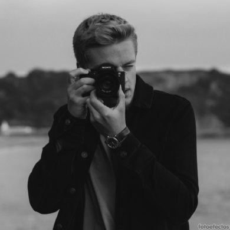
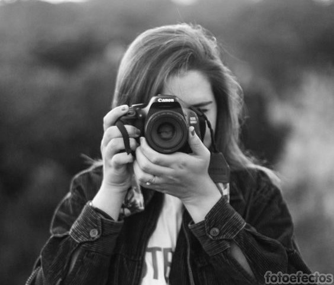

Mireya García
Fotógrafa
Grado en Comunicación Audiovisual en la Uvigo y Máster en Fotografía Documental y Artística en LABASAD.

Rodrigo López
Fotógrafo y Editor Audiovisual
Grado en Comunicación Audiovisual en la Uvigo y Máster en Edición y Postproducción en CENTA.

Elena Fernández
Fotógrafa y Productora Audiovisual
Grado en Comunicación Audiovisual en la Uvigo y Máster en Producción en ESCAC.